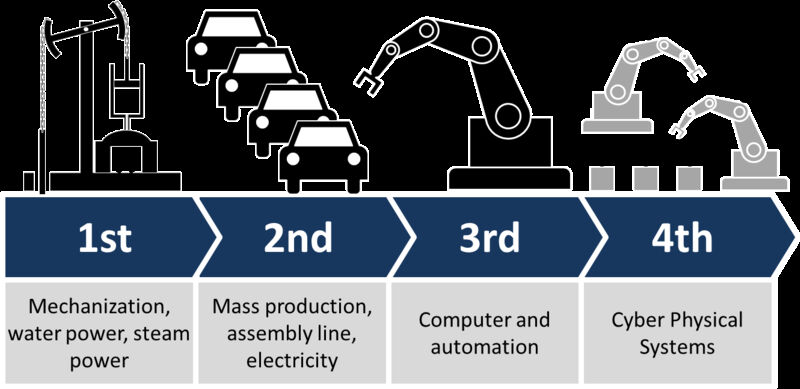
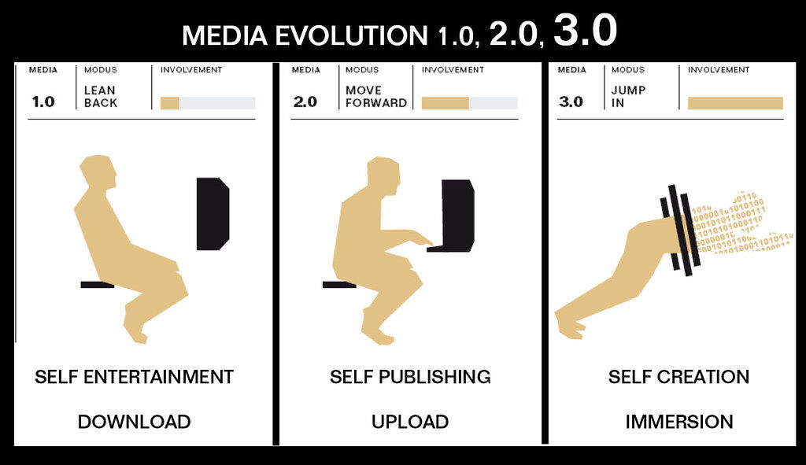
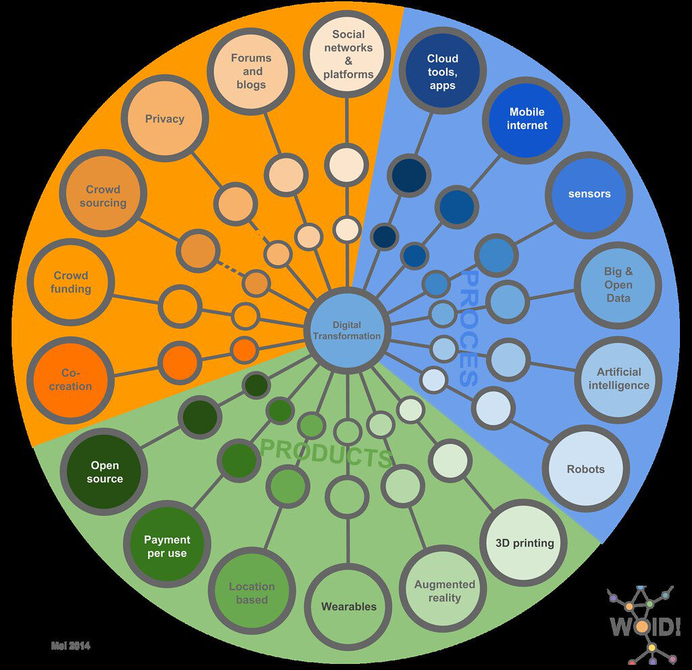

Trainees Edition
Trainers Edition
Trainees Edition
Trainers Edition
9.nodarbība: Mainīgā mediju vide.
Nodarbības apraksts
Šīs nodarbības galvenais mērķis ir sniegt pārskatu par digitālo revolūciju un jauno mediju rīkiem, kā arī šīs jaunās ekosistēmas ietekmi uz cilvēkiem. Nodarbības sekundārais mērķis ir sniegt vadlīnijas pasniedzējiem, kuri vēlas izmantot nodarbības saturu, lai mācītu savus studentus. Izpratne par digitālo transformāciju, ar ko saskaras sabiedrība, palīdz arī izvērtēt cilvēku jaunās lomas mainīgajā mediju vidē.
Atbilstoši šiem mērķiem nodarbība aptver digitālās revolūcijas nozīmi un tās īsu vēsturi, jauno mediju definīciju un īpašības un digitālās transformācijas ietekmi uz cilvēkiem un sabiedrību.
Studenti, kuri būs sekmīgi apguvuši šo nodarbību, spēs:
- izprast digitālo revolūciju,
- minēt piemērus jauno mediju platformām,
- atpazīt jauno mediju īpašības,
- saprast digitālās transformācijas ietekmi.
Papildus tam pasniedzēji, kuri būs sekmīgi apguvuši šo nodarbību, iegūs izpratni par to, kā nodot tālāk zināšanas par digitālo revolūciju un tās ietekmi un mainīgo jauno mediju vidi.
Nodarbības struktūra
Nodarbība sastāv no šādām daļām:
- nodarbības apraksts (mērķi, satura izklāsts un mācību rezultāti),
- nodarbības struktūra,
- vadlīnijas studentiem,
- vadlīnijas pasniedzējiem (kā sagatavoties, izmantojamās metodes, ieteikumi),
- saturs (mācību materiāli),
- tests,
- informācijas resursi (izmantotie avoti, ieteicamie avoti un video).
Galvenie nodarbības mērķi, satura izklāsts un mācību rezultāti ir raksturoti nodarbības apraksta daļā. Saturs ietver visus mācību materiālus. Tests sastāv no jautājumiem ar atbilžu variantiem un apgalvojumiem, par kuriem jāatzīmē, vai tie ir pareizi vai nepareizi, kas palīdzēs novērtēt studenta sekmes. Informācijas resursi ir dalīti divās sadaļās – izmantotie avoti un ieteicamie avoti tālākai izpētei. Izmantotie avoti ir to materiālu saraksts, kas citēti mācību materiālā. Ieteicamie avoti satur papildu informācijas avotus un video, kurus būtu ieteicams izlasīt un noskatīties, lai labāk izprastu tēmu. Vadlīnijas studentiem iekļauj instrukcijas un ieteikumus studentiem. Vadlīnijas pasniedzējiem palīdz pasniedzējiem dažādās mācību procesa fāzēs un sniedz noderīgus ieteikumus.
Vadlīnijas studentiem
Nepieciešams izlasīt tekstu un noskatīties ieteikto video. Ieteicamie informācijas avoti var palīdzēt labāk izprast tēmu. Pēc mācību materiāla apgūšanas vēlams izpildīt testu, lai novērtētu savas sekmes. Ja nepieciešams, mācību materiālu var pārskatīt vēlreiz.
Vadlīnijas pasniedzējiem
Vadlīnijas pasniedzējiem ietver padomus un ieteikumus, kā studentiem pasniegt informāciju par mainīgo mediju vidi un tās ietekmi.
Sagatavošanās
Ieteicams sagatavot prezentāciju (PowerPoint/Prezi/Canva), kas papildināta ar attēliem un faktisku informāciju. Jauno mediju piemēru pielāgošana atbilstoši vecumam vai interešu grupai palīdz labāk ilustrēt mācību saturu.
Nodarbības uzsākšana
Studentu iesaistīšanai var noderēt īss tests (3–5 jautājumi), izmantojot platformu Kahoot, vai atsevišķu jautājumu uzdošana, izmantojot Mentimeter. Jautājumi var kalpot gan kā motivējošs instruments, gan kā rīks, ar kura palīdzību iespējams apzināt studentu esošās zināšanas par nodarbības tēmu.
Izmantojamās metodes
Mācību procesā var tikt izmantotas dažādas metodes, piemēram:
- lekcijas,
- diskusijas,
- darbs grupās,
- pašizvērtējums.
Ieteikumi pasniedzējiem
Iesildīšanās
Lai iesaistītu studentus un vienotos par to, kas tiks apgūts nodarbības laikā, ir lietderīgi uzdot dažus sākotnējos jautājumus par nodarbības tēmu, piemēram, jūs varat studentiem pajautāt, vai viņi ir izjutuši kādas izmaiņas savā informācijas vai mediju patēriņa vidē, un, ja tā, kāda ir šo izmaiņu ietekme uz viņiem.
Nodarbības mērķa izskaidrošana
Skaidri jānorāda nodarbības mērķis (šajā gadījumā – attīstīt izpratni par digitālo revolūciju, jauno mediju platformām un to īpašībām, kā arī digitālās transformācijas ietekmi). Pēc iesildīšanās ar jautājumiem būs vieglāk izskaidrot nodarbības mērķus.
Nodarbības satura izklāsts
Iepazīstinot ar nodarbības saturu, ieklausieties studentos un iedrošiniet viņus aktīvi piedalīties.
- Pirms sniedzat pārskatu par digitālo revolūciju, pajautājiet studentiem, ko viņi par to zina.
- Pirms sniedzat pārskatu par jauno mediju vidi un jauno mediju īpašībām, pajautājiet studentiem, ko viņi par to zina.
- Raksturojot mainīgās mediju vides ietekmi, iedrošiniet studentus padomāt par savu pieredzi un apspriest to ar citiem nodarbības dalībniekiem.
Noslēgums
Sniedziet nodarbības kopsavilkumu un uzdodiet dažus jautājumus, kas palīdzētu izcelt būtiskāko satura izklāstā.
- Pajautājiet studentiem, vai, papildinot zināšanas par jauno mediju vidi, tas ļauj labāk pamanīt ar ziņām saistītos jautājumus.
Noslēdzot diskusiju, pārliecinieties, ka studenti saprot, ka mainīgā mediju vide ietekmē dažādus cilvēku dzīves aspektus un tai ir ievērojama loma sabiedrībā.
Saturs: mainīgā mediju vide
Ievads: digitālā revolūcija
Mediju un tehnoloģiskā revolūcija, kas ir notikusi pēdējo 50 gadu laikā, ir nesusi pasaulei krasas pārmaiņas, kas ietekmē to, kā mēs dzīvojam, strādājam un domājam (Bello, Blowers, Schneegans & Straza, 2021, 3. lpp.).
Līdz šim transformācijas, kas ietekmējušas cilvēces vēsturi, parasti klasificē šādi (Inigo, Siavash & Mika, 2017; Schwab, 2016):
- pirmā industriālā revolūcija (1800. gadi): tvaiks, ūdens un mašinizēta ražošana.
- otrā industriālā revolūcija (1900. gadi): darba dalīšana, elektrība un masveida ražošana.
- trešā industriālā revolūcija (1970. gadi): elektronika, informācijas un komunikācijas tehnoloģijas un automatizēta ražošana.
“Ceturtā industriālā revolūcija nes virkni sociālo, politisko, kultūras un ekonomisko apvērsumu, kas norisināsies 21. gadsimtā. Balstoties uz plašo digitālo tehnoloģiju pieejamību, kas attīstījusies trešās industriālās jeb digitālās revolūcijas rezultātā, ceturto industriālo revolūciju lielā mērā virzīs digitālo, bioloģisko un fizikālo inovāciju apvienošanās. Vēl svarīgāk – šīs revolūcijas gaitu noteiks izvēles, ko cilvēki izdara šodien. Pasaules kārtību pēc 50–100 gadiem lielā mērā noteiks tas, kā mēs domājam par šīm spēcīgajām jaunajām tehnoloģijām, kā tajās ieguldām un kā tās izmantojam" (Schwab, 2021).
Šobrīd, ņemot vērā digitālo tehnoloģiju un tādu jauno progresīvo tehnoloģiju kā biotehnoloģija, nanotehnoloģija, mākslīgais intelekts, robotika, lietu internets (IoT), trīsdimensionālā (3D) printēšana un kvantu skaitļošana izplatību, šī tehnoloģiskā un sociālā transformācija tiek saistīta ar “ceturto industriālo revolūciju” (jeb Industriju 4.0). Šīs tehnoloģijas var tikt raksturotas kā pārspējinovācijas jeb šķeltnieciskās inovācijas, tā kā tās grauj ikvienu industriju globālajā ekonomikā, kā rezultātā notiek ražošanas sistēmu, darba organizēšanas un pārvaldības pārveide (Knell, 2021, 10.–11. lpp.). Šajā jaunajā vidē mākslīgais intelekts (MI), robotika, nanotehnoloģija, 3D printēšana, genomika, biotehnoloģija un kognitīvās zinātnes arvien vairāk pārklājas, uzlabojot un nostiprinot cita citu. (Bello, Blowers, Schneegans & Straza, 2021, 3. lpp.). Šīs tehnoloģijas strauji maina arī to, kā cilvēki rada vērtību, veic vērtību apmaiņu un sadali. Sagaidāms, ka, līdzīgi kā iepriekšējās revolūcijas, ceturtā industriālā revolūcija ievērojami pārveidos institūcijas, industrijas un indivīdus, un tā paredz sistēmiskas pārmaiņas daudzos sektoros un dažādos cilvēku dzīves aspektos (Schwab, 2021).

Kristofera Rozera "Industrija 4.0" no AllAboutLean.com ir licencēts atbilstoši CC BY-SA 4.0
{kind=link}
Kas “jaunajos medijos” ir “jauns”?
1964. gadā Māršals Makluans aprakstīja pašu mediju kā “vēstījumu” (McLuhan, 203. lpp.), un definīcija, kas sniegta mūsdienu vārdnīcās, ir: “galvenais veids, kā liels skaits cilvēku saņem informāciju un izklaidi, tas ir, televīzija, radio, avīzes un internets” (“Mediji”, b. g.). Pirmsrakstu, senajās vai pirmstehnoloģiju kultūrās cilvēki kā medijus izmantoja griezumus akmenī, alu zīmējumus, skulptūras u. tml., lai izpaustu sevi vai atstātu kādu ziņu (Jabusch, 1992). 15. gadsimta vidū Gūtenbergs izgudroja iespiedmašīnu, un tas ļāva grāmatām kļūt par svarīgāko un plašāk lietoto mediju jebkuras ziņas, idejas vai informācijas izplatīšanai. Tam sekoja digitālo iespiešanas metožu ieviešana 1980. gados (Lister, Dovey, Giddings, Grant & Kelly, 2009, 17. lpp.), internets un viedtālruņi 2000. gados.
“Parādoties jaunām komunikācijas tehnoloģijām, šī kaujas lauka teritorija pārvirzās. No Johana Gūtenberga iespiedmašīnas līdz telegrāfam un no radio līdz televīzijai jaunās tehnoloģijas izplata informāciju ātrāk un tālāk – jaunos un dramatiskos veidos” (Hornik, Anzalone & Spikes, 2018, 23. lpp.).
Kad datori sāka kļūt arvien izplatītāki, tie lielākoties tika izmantoti darījumu vai oficiālo dokumentu gatavošanai. Drīz vien datoriem tika pievienotas multivides funkcijas, kā audio un video. Iespēja saglabāt un/vai skatīties audio un video failus datorā ir papildinājusi tos ar izklaides funkcijām. Interneta izplatība palielināja šī jaunā medija ietekmi. Kompaktdisku (CD), DVD disku un kabeļtelevīzijas vietā par mūzikas avotu stereo sistēmām un video avotu ekrāniem kļuva internets, vispirms caur datoriem, pēc tam – viedtālruņiem. Mūsdienās viedtālruņi un mobilās lietotnes tiek plaši izmantotas, lai klausītos mūziku, skatītos filmas vai digitālo video saturu, fotografētu, piedalītos audio vai video tikšanās ar citiem, sērfotu internetā utt. (“Digitālā konverģence”, b. g.). Izklaides un tehnoloģiju konverģence ir mainījusi saistītās industrijas (tādas kā televīzijas pārraides, preses izdevējdarbība utt.) uz visiem laikiem (Kipp, 2004, b. vi).
Stīva Vilhelma "Mobilās informācijas tehnoloģijas, kuras es lietoju katru dienu" ir licencēts atbilstoši CC BY-NC-SA 2.0
Jēdziens “jaunie mediji” nebūt nenorāda uz konkrētu komunikācijas veidu. Straujās tehnoloģiju attīstības dēļ jēdziena definīcija pastāvīgi mainās, piemēram, daži mediju veidi, tādi kā “laikraksts”, var būt piemēri gan jaunajiem medijiem, gan vecajiem, tā kā laikraksts var būt gan drukāts medijs, gan tiešsaistes. Turpretī raidierakstu vai viedtālruni var pilnībā pieskaitīt jaunajiem medijiem, tā kā tiem nav “tradicionālo” versiju. Šobrīd jauno mediju definīcija varētu skanēt šādi: “jebkurš medijs, sākot no mājaslapas, e-pasta vai tīmekļa dienasgrāmatas un beidzot ar mobilajiem telefoniem, straumēšanas lietotnēm vai jebkādiem ar internetu saistītiem saziņas veidiem, kurus piegādā digitāli” (Cote, 2020). Tas, kas ir jauns “jaunajos medijos”, ir saistīts ar specifiskajiem veidiem, kādos tie pārveido tradicionālos (vecākos) medijus, un veidiem, kādos tradicionālie mediji pārveido paši sevi, lai spētu stāties pretī jauno mediju izaicinājumiem (Bolter & Grusin, 2000, 15. lpp.).
Tūkstošgades pirmās desmitgades beigās satura un intelektuālā īpašuma ceļošana starp dažādiem medijiem kļuva skaidri redzama, piemēram, digitālās straumēšanas platformas lika pārskatīt televīzijas koncepciju. Izplūda robežas starp dažādiem darba aprakstiem (pieaugot tādu nodarbošanos kā pilsoņu žurnālistika lomai), fokuss pārvirzījās no “auditorijas” uz “lietotājiem” un no “patērētājiem” uz “veidotājiem”. Jāatzīmē gan, ka šīs izmaiņas mediju veidos, veidošanā, izplatīšanā un patērēšanā ir sarežģītākas nekā norāda dalījums “vecajos” un “jaunajos” medijos (Lister, Dovey, Giddings, Grant & Kelly, 2009, 9.–10. lpp.). Piemērotāk būtu skatīt “jaunos medijus” kā tālāk tekstā nosauktā kombināciju (Lister, Dovey, Giddings, Grant & Kelly, 2009, 12.–13. lpp.):
- Jaunas tekstuālās pieredzes: jauni teksta formu, izklaides, tīksmes veidi un jauni mediju patēriņa veidi (datorspēles, simulācijas, 3D filmas).
- Jauni veidi, kā parādīt pasauli: mediji, kas piedāvā jaunas attēlošanas iespējas un pieredzes veidos, kas ne vienmēr ir skaidri definēti (piemēram, imersīvās virtuālās vides, interaktīvie multimediji ekrāna režīmā)
- Jaunas attiecības starp cilvēkiem (lietotājiem un patērētājiem) un mediju tehnoloģijām: izmaiņas vizuālo un saziņas līdzekļu lietošanā ikdienā, kā arī izmaiņas nozīmēs, kas tiek piešķirtas mediju tehnoloģijām.
- Jaunas attiecību starp iemiesojumu, identitāti un kopienu pieredzes: izmaiņas personīgajā un sociālajā laika, telpas un vietas pieredzē (gan vietējā, gan pasaules mērogā), kas ietekmē to, kā mēs pieredzam sevi un savu vietu pasaulē.
- Jauni priekšstati par bioloģiskā ķermeņa attiecībām ar tehnoloģiskajiem medijiem: izaicinājumi atšķirt cilvēcisko un mākslīgo, dabu un tehnoloģiju, cilvēka ķermeni un tehnoloģiskās palīgierīces, reālo un virtuālo.
- Jauni organizēšanas un veidošanas modeļi: plaša attīstība un integrācija mediju kultūrā, industrijā, ekonomikā, pieejamībā, īpašumtiesībās, kontrolē un regulācijā.
Jauno mediju īpašības
Jēdziens “jaunie mediji” parasti tiek lietots, lai apzīmētu tehnoloģiskās, tekstuālās, tradīciju un kultūras izmaiņas tajā, kā mediji tiek veidoti, izplatīti un lietoti. Aplūkojot jauno mediju īpašības, priekšplānā iznāk tādi raksturojumi kā digitāls, interaktīvs, hiperteksta, virtuāls, savienots tīklā, simulēts (Lister, Dovey, Giddings, Grant & Kelly, 2009, 13. lpp.). Šīs īpašības ir daļa no elementu matricas, kas atšķir jaunos medijus no citiem medijiem. Ne visām šīm īpašībām ir jābūt klātesošām visos jauno mediju piemēros, tie var piemist medijiem atšķirīgā mērā atšķirīgās kombinācijās. Tās arī nav tikai tehnoloģiskas funkcijas, tām piemīt kultūras, sociālie un ekonomiskie aspekti; piemēram, ja mēs runājam par virtualitātes jēdzienu, tas ir pielietojams ne tikai uzgalvas displeju gadījumā, bet arī runājot par veidiem, kā sevis paša un savas identitātes pieredzes ir “virtuālās” telpas pastarpinātas. (Lister, Dovey, Giddings, Grant & Kelly, 2009, 44. lpp.).
“Jaunos medijus raksturo visas trīs īpašības vienlaicīgi: tie ir mediji, kas ir integrēti, interaktīvi un 20. un 21. gadsimta mijā izmanto ciparkodu. … Izmantojot šo definīciju, ir vienkārši identificēt mediju kā veco vai jauno, piemēram, tradicionālā televīzija ir integrēta, tā kā tajā ir gan attēli, gan skaņa, gan teksts, bet tā nav interaktīva un neizmanto ciparkodu. Vecais labais telefons ir interaktīvs, bet nav integrēts, tā kā tas pārraida tikai runu un skaņas un neizmanto ciparkodu” ( van Dijk, J., 2006, 9. lpp.).
Van Dijks (2006, 6.–9.lpp.) jauno mediju īpašības klasificē pēc trīs galvenajiem konceptiem: integrācijas, interaktivitātes un ciparkoda.
Integrāciju var definēt kā telekomunikācijas, datu komunikācijas un masu komunikācijas konverģenci vienā medijā, kas var parādīties vienā no tālāk uzskaitītajiem līmeņiem:
- infrastruktūras (piemēram, telefonu un datoru (datu) komunikācijai var tikt apvienotas dažādas pārraides saites un iekārtas);
- transporta (piemēram, interneta telefonijas un tīmekļa televīzijas nodrošināšana ar kabeļtelevīzijas un satelīttelevīzijas palīdzību);
- pārvaldības (piemēram, kabeļtelevīzijas uzņēmums, kas izmanto telefona līnijas, un telefona pakalpojumu sniedzējs, kas izmanto kabeļtelevīziju);
- pakalpojumu (informācijas un sakaru pakalpojumu kombinācija internetā);
- datu veidu (skaņu, datu, tekstu un attēlu kombinācija).
Digitalizācija sekmē telekomunikācijas un datu komunikācijas pilnīgu integrāciju, bet masu komunikācijas integrācijai konverģences procesā būtiskāka ir platjoslas pārraide, kas veicina interaktivitāti. Tā kā digitālie mediji ir interaktīvāki nekā tradicionālie mediji, tie nodrošina lielāku ietekmi lietotājam un pieprasījuma pusei. Interaktivitāti var definēt, atsaucoties uz četrām dimensijām, – telpas (iespēja izveidot divpusēju vai daudzpusēju komunikāciju), laika (sinhronitātes pakāpe), uzvedības (iespēja sūtītājam un saņēmējam jebkurā brīdī apmainītīties ar lomām), mentālo (rīkošanās un reaģēšana, visiem iesaistītajiem saprotot nozīmi un kontekstu).
Trešā īpašība, definēta kā ciparkods, ir saistīta ar vieninieku un nuļļu virknēm (sauktas par baitiem, kur katrs atsevišķais 1 vai 0 ir bits), ar kuru palīdzību tiek pārveidota un pārraidīta jebkura informācijas un komunikācijas vienība, izmantojot datortehnoloģiju. Visa mediju satura pārveidošana (par attēlu, skaņu, tekstu un skaitlisko datu digitālajām formām) vienā un tajā pašā ciparkodā palīdz nodrošināt satura viendabīgumu un standartizāciju. Šīs digitālās formas ir izveidotas, izmantojot ne tikai vienu un to pašu pamata kodu, bet arī tās pašas valodas, kā HTML (hiperteksta iezīmēšanas valoda), kas ir globālā tīmekļa (www) lapu grafiskais kods. Šis kods padara dažādu informācijas formu izveidošanu, ierakstīšanu un izplatīšanu daudz vienkāršāku. Izmantojot ciparkodu, informācijas un komunikācijas vienības (tādas kā teksti, attēli, skaņas, audiovizuālās programmas) var tikt pārveidotas par hipersaitēm objektiem, kurus ir iespējams paredzēt un apstrādāt tādā secībā, kādā to vēlas skatītājs vai klausītājs.

Cea "Mediji 3.0" ir licencēts atbilstoši CC BY 2.0
Jaunos medijus reizēm dēvē arī par mūsdienu medijiem, un ir aspekti, kas no lietotāja skatpunkta tos atšķir no priekšgājējiem. Šie aspekti ir satura un kanālu pārpilnība, mobilitāte, interaktivitāte un multimedialitāte. Kā varam redzēt, skatoties uz nosauktajām īpašībām, jaunos medijus neveido tehnoloģiskie aspekti paši par sevi. Tās drīzāk norāda, ka šie mediji sniedz lietotājiem divu īpašību kombināciju – informācijas, kas tiek komunicēta, un komunikācijas, kas ir tehnoloģiju pastarpināta jeb mediēta. Citiem vārdiem sakot, mūsdienu mediju vide veicina efektīvāku komunikācijas procesu (Schejter, Ben-Harush & Tirosh 2017, 238. lpp.).
Digitālās transformācijas sociālā ietekme
Mūsdienās cilvēku uzvedība, uzskati un attiecības tiek pārkārtotas, ņemot vērā savienojamību. Šo “būšanu savienotiem” var analizēt šādu jautājumu kontekstā (Pesce 2013, 430.–437. lpp.):
- Hipersavienojamība: jebkurš indivīds var tieši kontaktēties ar trīs ceturtdaļām cilvēces.
- Hiperizplatīšana: cilvēku instinktīvā reakcija dalīties ir spēcīgāka nekā jebkad agrāk, bet tā ir paplašinājusies no mūsu atseviškajām balsīm uz kopienām. Ja tas, ko mēs sakām, ietekmē tos, ar kuriem mēs uzturam attiecības, mūsu balsi var dzirdēt visā pasaulē.
- Hiperintelekts: kad pilnīgi hipersavienotā vidē hiperizplatīšanas procesā rodas specifiskas zināšanu jomas centrālais punkts, to var saukt par hiperintelektu (labs piemērs ir Vikipēdija).
- Hiperiespējošana: hipersavienotu indivīdu grupa, kura izvēlas hiperizplatīt savas zināšanas noteiktā apgabalā, var sekmēt hiperintelekta rašanos. Hiperintelekts nav statisks, tā kā mijiedarbība ar to nozīmē lietot hiperintelekta sniegto informāciju, kā, kur un kad nepieciešams.

Detlefa La Granda "Digitālā transformācija" ir licencēts atbilstoši CC BY 2.0
Ņemot vērā informācijas un komunikācijas tehnoloģiju jauninājumus, tiek spriests, ka mūsu ikdienas dzīvē notiek nopietnas pārmaiņas, tāpat kā struktūrās un attiecībās, uz ko tā balstās, tādās kā individualitātes apziņa, patērēšana, paaudžu un dzimumu dinamika ģimenēs un citās mājsaimniecībās, saiknes starp globālo un vietējo (Lister, Dovey, Giddings, Grant & Kelly, 2009, 7. lpp.). Dažādos pētījumos tiek uzsvērts, ka tehnoloģija un digitalizācija pārveido visu – no ikdienas dzīves līdz globālajai ekonomikai. Tehnoloģijas, kas tika ieviestas mūsu dzīvē pirmās industriālās revolūcijas laikā, tādas kā tvaika dzinējs un elektrifikācija, ļāva attīstīties mūsdienu tehnoloģijām (Knell, 2021, 10.–11. lpp.).
“Tā visa rezultāts ir globāla mēroga izmaiņas sabiedrībā. Ietekmējot ekonomiskās dzīves stimulus, noteikumus un normas, tas maina to, kā mēs komunicējam, mācāmies, izklaidējam sevi, kā attiecamies cits pret citu un izprotam sevi kā cilvēciskas būtnes. Sajūta, ka jaunās tehnoloģijas tiek attīstītas un ieviestas aizvien straujākā tempā, ietekmē cilvēku identitāti, kopienas un politiskās struktūras” ( Schwab, 2021).
Digitālā revolūcija patiesi ir svarīgākais attīstības virziens informācijas izplatīšanā kopš Gūtenberga iespiedmašīnas, un tā ievada daudz lielākas pārmaiņas cilvēku komunikācijā (Clarke, 2012, 79. lpp.). Kā visas iepriekšējās revolūcijas, mūsdienu informācijas un mediju videi ir gan pozitīva, gan negatīva ietekme uz dažādām iesaistītajām pusēm. Dažas valstis ir kļuvušas bagātākas digitālās transformācijas dēļ, taču tajā pašā laikā tiek novērotas globālas problēmas, nespējot taisnīgi sadalīt šos ieguvumus. Ir parādījušies arī riski, kā kiberdrošības draudi, maldinoša informācija, potenciāla bezdarba līmeņa, kā arī sociālās un ienākumu nevienlīdzības palielināšanās. Neskatoties uz to, ja ir iespējams veikt nepieciešamās darbības, kas salāgotu kopīgās cilvēku vērtības ar tehnoloģisko attīstību, tiek argumentēts, ka cilvēce varētu gūt vēsturē lielāko labumu no ceturtās industriālās revolūcijas (Schwab, 2021).
Vingrinājumi
- Vai varat iedomāties kādus piemērus “jauno mediju” platformām, ierīcēm, rīkiem utt., ko izmantojat ikdienā?
- Kad apdomājat jauno mediju īpašības (integrāciju, interaktivitāti un ciparkodu), kas padara jaunos medijus pievilcīgus, noderīgus vai nepieciešamus jums?
Tests
Izmantotie avoti
Bello, A., Blowers, T., Schneegans, S. & Straza, T. (2021). To be Smart, the Digital Revolution will Need to be Inclusive: Excerpt from the UNESCO Science Report. Retrieved from https://unesdoc.unesco.org/ark:/48223/pf0000375429.
Bolter, J. D. & Grusin, R. (2000). Remediation: Understanding New Media. Massachusetts: MIT Press.
Clarke, M. (2012). The digital revolution. In Campbell, R:, Pentz, E. & Borthwick, I. (Eds.), Academic and Professional Publishing (pp. 79-98). Oxford: Chandos Publishing.
Cote, J. (2020). What is New Media? Retrieved from https://www.snhu.edu/about-us/newsroom/liberal-arts/what-is-new-media.
Digital convergence. (n.d.). In PCMag Encyclopedia. Retrieved from https://www.pcmag.com/encyclopedia/term/digital-convergence.
Hornik, R., Anzalone, J. & Spikes, M. (2018). GetNewsSmart: A Guide to Understanding the Key Concepts of News Literacy. New York: The Center for News Literacy.
Inigo F, Siavash H, Mika S (2017). Current and future business models for 3D printing applications. In Ballardini M., Norrgard M., Partanen J. (Eds.), 3D Printing, Intellectual Property and Innovation: Insights from Law and Technology (pp. 33-62). Alphen aan den Rijn: Wolters Kluwer. Retrieved from https://www.researchgate.net/publication/321384439_Current_and_Future_Business_Models_for_3D_Printing_Applications.
Jabusch, D.M. (1992). Communication Media in Ancient Cultures. Retrieved from https://files.eric.ed.gov/fulltext/ED349593.pdf.
Kipp, S. (2004). Broadband Entertainment: Digital Audio, Video, and Gaming in Your Home. Colo: Broadband Entertainment.
Knell, M. (2021). The digital revolution and digitalized network society. Review of Evolutionary Political Economy, 2: 9–25. Retrieved from https://doi.org/10.1007/s43253-021-00037-4.
Lavopa, A. & Delera, M. (2021, Janurary). What is the Fourth Industrial Revolution? Retrieved from https://iap.unido.org/articles/what-fourth-industrial-revolution.
Lister, M., Dovey, J., Giddings, S., Grant, I. & Kelly, K. (2009). New Media: A Critical Introduction. London: Routledge.
McLuhan, M. (2003). The medium is the message. In Wardrip-Fruin, N. & Montfort, N. (Eds.), The New Media Reader. Massachusetts: MIT Press.
Media (n.d.). In Oxford Learner’s Dictionary. Retrieved from https://www.oxfordlearnersdictionaries.com/definition/english/media?q=media.
Pesce, M. (2013). The New Media Toolkit. In J. Hartley, J. Burgess & A. Bruns (Eds.). A Companion to New Media Dynamics (pp. 427-438). West Sussex: Blackwell.
Schejter, A. Ben-Harush, O. & Tirosh, N. (2017). The Effect of the Transformation in Digital Media on the Digital Divide. In M. Friedrichsen & Y. Kamalipour (Eds.), Digital Transformation in Journalism and News Media, Media Business and Innovation (pp. 235-246). Cham: Springer.
Schwab, K. (2016, January 14). The Fourth Industrial Revolution: What it Means, How to Respond. Retrieved from https://www.weforum.org/agenda/2016/01/the-fourth-industrial-revolution-what-it-means-and-how-to-respond/.
Schwab, K. (2021, March 23). The Fourth Industrial Revolution. Encyclopedia Britannica. Retrieved from https://www.britannica.com/topic/The-Fourth-Industrial-Revolution-2119734.
van Dijk, J. (2006). The Network Society: Social Aspects of New Media. London: Sage.
Ieteicamie avoti
Schwab, K. (2016, January 14). The Fourth Industrial Revolution: What it Means, How to Respond. Retrieved from https://www.weforum.org/agenda/2016/01/the-fourth-industrial-revolution-what-it-means-and-how-to-respond/.
Garber, M. (2010, April 7). The Gutenberg Parenthesis: Thomas Pettitt on Parallels Between the Pre-print Era and Our Own Internet Age. Retrieved from https://www.niemanlab.org/2010/04/the-gutenberg-parenthesis-thomas-pettitt-on-parallels-between-the-pre-print-era-and-our-own-internet-age/.
Ieteicamie video
Nieman Journalism Lab. (2010). Thomas Pettitt on the Gutenberg Parenthesis. Retrieved from https://vimeo.com/10705406.